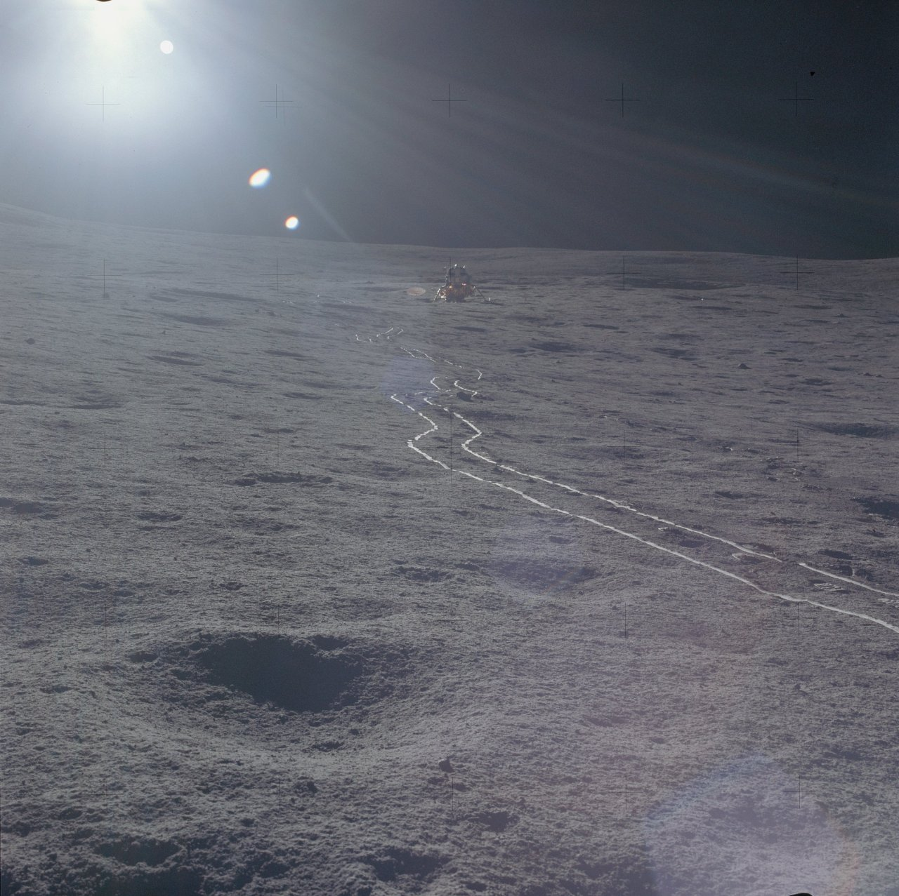

This up-Sun photo was taken from near the ALSEP Central Station back toward the LM in order to provide relative location information. As with the astronauts’ bootprints, the track made by the MET tires are compact, smooth, and, as can be seen so dramatically in this picture, more highly reflective than the rough undisturbed surface.